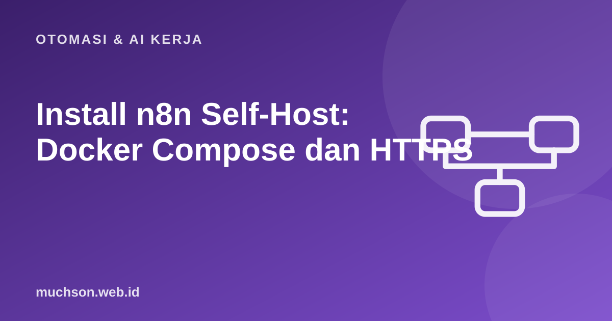

Beranda › Artikel › Otomasi & AI Kerja
Otomasi & AI KerjaInstall n8n Self-Host: Docker Compose dan HTTPS
Menjalankan n8n sendiri memberi kontrol penuh atas data dan biaya, tetapi juga membuat Anda bertanggung jawab atas pembaruan, backup, dan keamanan. Panduan ini menyusun pemasangan yang rapi dengan Docker Compose, basis data PostgreSQL, dan HTTPS, plus daftar periksa agar tidak ada yang terlewat.
Sebaiknya sudah paham: dasar Linux/terminal, Docker dasar

Setelah membaca dan mencoba materi ini, Anda mampu:
- menjalankan n8n dengan Docker Compose dan volume persisten
- mengatur variabel lingkungan penting (host, protokol, zona waktu, kunci enkripsi)
- memakai PostgreSQL untuk produksi
- menaruh n8n di belakang reverse proxy dengan HTTPS
- menyusun strategi backup dan pembaruan
n8n adalah alat visual; alur kerjanya dibuat di editor n8n, bukan di halaman ini. Contoh kode JavaScript di bawah meniru logika node Code dan dijalankan sungguhan dengan Node.js agar hasilnya dapat dibuktikan. Antarmuka dan nama node dapat berubah antar versi, jadi cocokkan dengan dokumentasi n8n.
Nama variabel lingkungan dan versi image dapat berubah. Rujuk dokumentasi resmi "Hosting n8n" untuk versi terbaru dan kunci versi image (jangan memakai tag latest tanpa pengujian) agar pembaruan tidak mengejutkan.
Arsitektur
docker-compose.yml
services:
postgres:
image: postgres:16
restart: unless-stopped
environment:
POSTGRES_USER: n8n
POSTGRES_PASSWORD: ${DB_PASSWORD}
POSTGRES_DB: n8n
volumes:
- db_data:/var/lib/postgresql/data
healthcheck:
test: ["CMD-SHELL", "pg_isready -U n8n"]
interval: 10s
retries: 5
n8n:
image: docker.n8n.io/n8nio/n8n:1.XX.X # kunci ke versi tertentu yang sudah Anda uji
restart: unless-stopped
depends_on:
postgres:
condition: service_healthy
environment:
DB_TYPE: postgresdb
DB_POSTGRESDB_HOST: postgres
DB_POSTGRESDB_DATABASE: n8n
DB_POSTGRESDB_USER: n8n
DB_POSTGRESDB_PASSWORD: ${DB_PASSWORD}
N8N_HOST: n8n.contoh.id
N8N_PROTOCOL: https
WEBHOOK_URL: https://n8n.contoh.id/
GENERIC_TIMEZONE: Asia/Jakarta
TZ: Asia/Jakarta
N8N_ENCRYPTION_KEY: ${N8N_ENCRYPTION_KEY} # WAJIB dicadangkan: tanpa ini credential tidak bisa didekripsi
EXECUTIONS_DATA_PRUNE: "true"
EXECUTIONS_DATA_MAX_AGE: "336" # jam; hapus riwayat lama agar basis data tidak membengkak
volumes:
- n8n_data:/home/node/.n8n
ports:
- "127.0.0.1:5678:5678" # hanya lokal; akses publik lewat reverse proxy
volumes:
db_data:
n8n_data:# .env (izin 600, jangan di-commit)
DB_PASSWORD=ganti-dengan-sandi-acak-panjang
N8N_ENCRYPTION_KEY=ganti-dengan-string-acak-32-karakter-atau-lebih
# membuat nilai acak: openssl rand -hex 32HTTPS dengan reverse proxy
# Caddyfile (sertifikat Let's Encrypt otomatis)
n8n.contoh.id {
reverse_proxy 127.0.0.1:5678
}docker compose pull
docker compose up -d
docker compose logs -f n8nPemeriksa konfigurasi (peragaan)
Kesalahan konfigurasi sering baru ketahuan setelah webhook gagal. Berikut skrip kecil yang memeriksa daftar variabel penting, seperti yang bisa Anda jalankan sebelum docker compose up.
const env = {
DB_TYPE: 'postgresdb',
N8N_HOST: 'n8n.contoh.id',
N8N_PROTOCOL: 'http', // salah: webhook akan dibuat dengan http
WEBHOOK_URL: 'https://n8n.contoh.id/',
GENERIC_TIMEZONE: '',
N8N_ENCRYPTION_KEY: 'pendek', // terlalu pendek
};
const masalah = [];
if (env.N8N_PROTOCOL !== 'https') masalah.push('N8N_PROTOCOL sebaiknya https (di belakang reverse proxy HTTPS)');
if (!env.WEBHOOK_URL || !env.WEBHOOK_URL.startsWith('https://')) masalah.push('WEBHOOK_URL harus berupa URL https publik');
if (!env.GENERIC_TIMEZONE) masalah.push('GENERIC_TIMEZONE kosong: jadwal (cron) memakai zona waktu yang salah');
if (!env.N8N_ENCRYPTION_KEY || env.N8N_ENCRYPTION_KEY.length < 24) masalah.push('N8N_ENCRYPTION_KEY kurang kuat (minimal 24 karakter acak) dan harus dicadangkan');
if (env.DB_TYPE !== 'postgresdb') masalah.push('Produksi sebaiknya PostgreSQL, bukan SQLite bawaan');
console.log(masalah.length ? masalah.map(m => '- ' + m).join('\n') : 'Konfigurasi tampak baik');- N8N_PROTOCOL sebaiknya https (di belakang reverse proxy HTTPS)
- GENERIC_TIMEZONE kosong: jadwal (cron) memakai zona waktu yang salah
- N8N_ENCRYPTION_KEY kurang kuat (minimal 24 karakter acak) dan harus dicadangkanBackup dan pembaruan
- Backup harian:
docker compose exec -T postgres pg_dump -U n8n n8n | gzip > backup-$(date +%F).sql.gz, salin ke penyimpanan terpisah (S3/Drive/server lain) dan uji pemulihan secara berkala. - Cadangkan N8N_ENCRYPTION_KEY: tanpanya, backup basis data tidak berguna karena credential tak bisa didekripsi.
- Ekspor workflow ke JSON dan simpan di Git untuk riwayat dan peninjauan.
- Pembaruan: baca catatan rilis, backup dulu, ubah tag versi,
docker compose pull && docker compose up -d; uji di instans staging untuk alur kritis. - Pantau: kapasitas disk, memori, dan eksekusi gagal; pasang uptime monitor pada /healthz.
Keamanan dasar
- Buat akun pemilik dengan sandi kuat dan aktifkan 2FA bila tersedia.
- Batasi akses jaringan: firewall hanya membuka 80/443; SSH dengan kunci.
- Webhook publik: gunakan autentikasi (header token, basic auth) atau tanda tangan, dan validasi isi.
- Gunakan credential n8n, bukan menaruh kunci di dalam node atau kode.
- Perbarui secara berkala; kerentanan ditemukan dari waktu ke waktu pada semua perangkat lunak.
- Pisahkan lingkungan uji dan produksi.
1. Mengapa mengunci versi image lebih baik daripada latest?
2. Apa saja yang perlu dibackup?
3. Mengapa pangkas riwayat eksekusi?
4. Bagaimana mengamankan webhook publik?
- Docker Compose: n8n + PostgreSQL + volume, rahasia di .env.
- Reverse proxy (Caddy/Nginx) mengakhiri HTTPS; port n8n tidak dibuka publik.
- Set N8N_HOST, N8N_PROTOCOL, WEBHOOK_URL, GENERIC_TIMEZONE, dan kunci enkripsi.
- Backup basis data + kunci, uji pemulihan, kunci versi, pantau, dan amankan webhook.